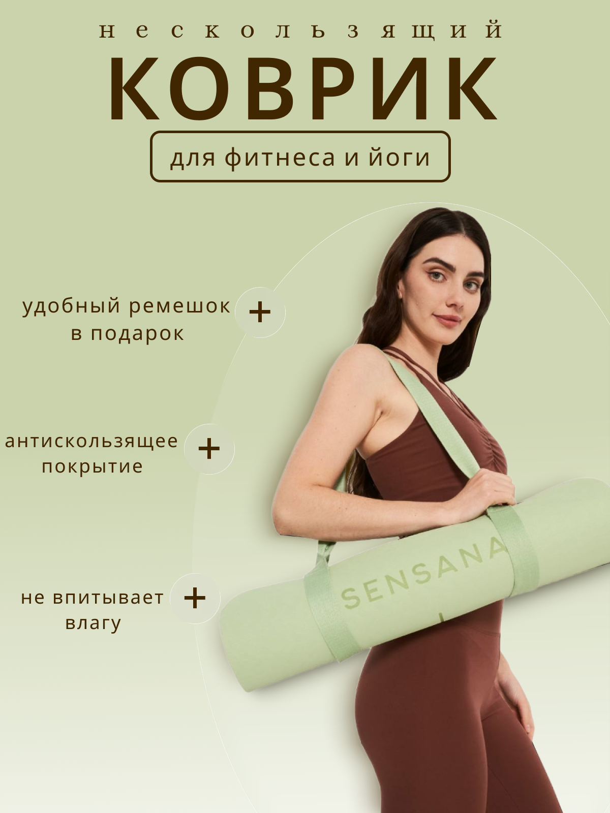
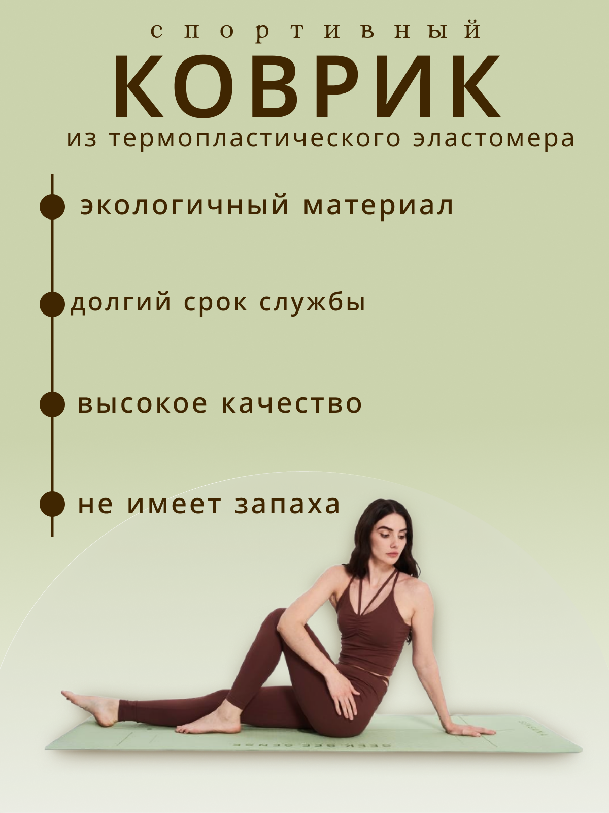
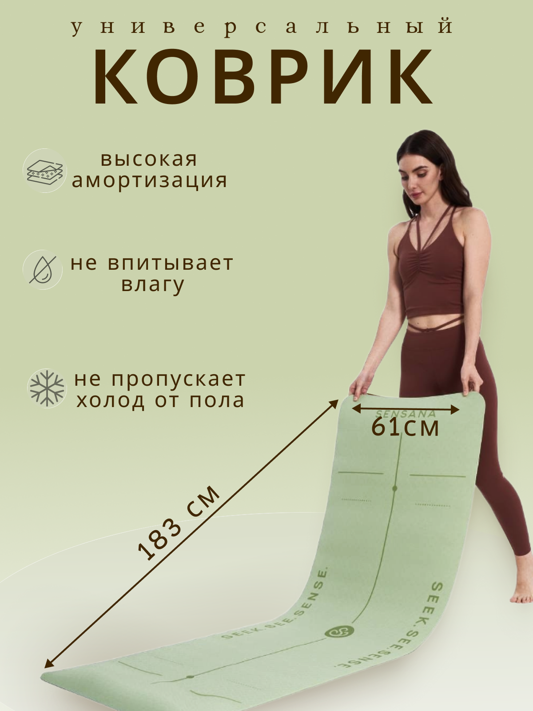

Sensana
Серия инфографических карточек для коврика для фитнеса и йоги: продукт на модели, материал и технические параметры.

- Клиент
- Sensana — бренд товаров для фитнеса и йоги
- Задача
- Разработать серию карточек товара для маркетплейса под коврик для фитнеса и йоги: главный слайд с ключевыми преимуществами, материал и его свойства, точные размеры — в едином спокойном зелёном стиле бренда.
- Роль
- Графический дизайнер: концепция серии, инфографика, типографика, компоновка съёмки с моделью и предметных деталей коврика, подготовка под формат карточек маркетплейса.
Категория ковриков для йоги перегружена одинаковыми ракурсами «свёрнутый рулон на плече», поэтому задачей было удержать этот узнаваемый жест (он сразу считывается как «спортивный аксессуар»), но выстроить вокруг него более спокойную, почти wellness-эстетику — приглушённый зелёный, серьёзное сосредоточенное лицо модели вместо дежурной фитнес-улыбки.
Первая карточка отрабатывает эмоцию и антискользящее свойство через жест несения коврика, закрывая сразу три преимущества короткими плашками. Вторая переключается на рациональный аргумент — материал (термопластический эластомер) и его свойства: экологичность, срок службы, отсутствие запаха, поданные вертикальным списком с точками-маркерами, похожим на инфографику состава в косметике. Третья решает практическую задачу примерки — точные размеры коврика (183×61 см) через кадр разворачивания с иконками свойств (амортизация, влагостойкость, теплоизоляция от пола).



Серия карточек соединила узнаваемый визуальный код категории с точными техническими параметрами, закрыв и эмоциональное впечатление, и практический вопрос размера при выборе коврика.